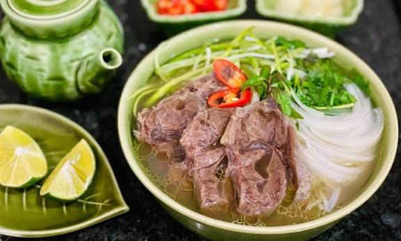

Home
Pho Recipe

Description
A famous Vietnamese beef noodle soup featuring a clear, deeply savory, and spiced bone broth poured over flat rice noodles.
It is topped with tender cooked meats or thinly sliced raw beef, and served with fresh herbs, lime, and bean sprouts.
Main Ingredients
- Beef Meat
- Beef Bone
- Onion
- Pho - Rice noodle
- Ginger
- Cinnamon
- Herbal
- Salt
- Sugar
- MSG
Steps
- Stew Beefbone in the 12L of Water for 8Hrs
- Grill the Onion and Ginger and Cinnamon in the oven until it crunch and smell nicely
- Slice the onion into thin slices
- boil for 2L of Water and put the noodle in for 30 seconds, after that bring the noodle into a bowl
- slice beef meat into slices and put onto the noodle bowl
- pour the beef bone broth in to the noodle bowl with meat inside and put sliced onion into the bowl, then you have a delicious Vietnamese Pho Bo